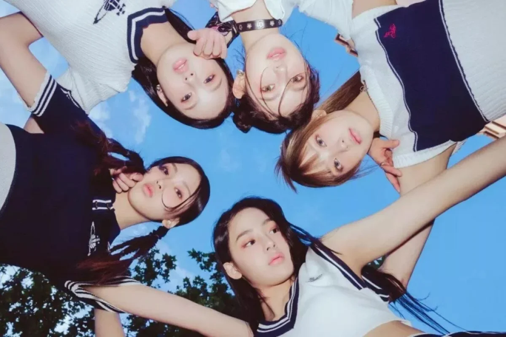

O que é kpop: principais grupos, indústria e expressões
O K-pop é um gênero musical, que inclui conteúdo visual em vídeos. Iniciou na Coreia do Sul, ainda no ano de 1992, badalado pelo grupo Seo Taiji and Boys, um dos primeiros conjuntos de K-pop, formados no início da década de 1990.
É composto por diferentes tipos de músicas, que compõem o ritmo e incluem muitos toques estrangeiros, com influência de diversos gêneros ocidentais, como country, jazz, hip hop, reggae, folk, pop, rock, dentre outros.
Então, os videoclipes possuem grande apelo visual, muito coloridos e cheios de imagens. Foram conquistando a cabeça dos adolescentes coreanos que, gradativamente, viralizaram os conteúdos da música da Coréia pela internet.
Quem são os idols do k-pop?

Os artistas da Coreia do Sul são treinados para “serem mais que cantores”, tornando-se profissionais do entretenimento com habilidades para cantar, dançar, rimar, serem carismáticos e estilosos em cima de um palco. Não é à toa que essas pessoas são chamadas de idols (ídolos, em português) – verdadeiros exemplos que buscam ser amados pelo público e garantir o maior número de vendas. O magnetismo desses artistas fez com que principalmente adolescentes se tornassem consumidores do estilo musical, e a indústria reconheceu o potencial desses novos “clientes”.
Porém, a criação e gerenciamento desses idols é diferente do que acompanhamos com divas pop dos Estados Unidos, por exemplo. Começando pelo processo de seleção, é comum pré-adolescentes participarem de inúmeras audições globais para serem escolhidos como trainees de empresas que lançam grupos de k-pop. Funcionários dessas organizações também trabalham como “olheiros”, buscando jovens com potencial e/ou beleza para serem artistas em escolas, ruas ou outros ambientes.
Outro ponto importante é que a contratação como trainee não quer dizer que a pessoa já esteja preparada para se tornar um(a) idol – ou que vai estrear em algum momento. Meninos e meninas passam por períodos de treinamento rigoroso que podem durar anos. O processo inclui aulas de dança, canto, rap, idiomas, além de moradia, alimentação, às vezes cursos fora da Coreia, avaliações mensais, etc. Tudo é pago pela empresa contratante até o(a) trainee ser lançado(a) no mercado e pagar todos os valores de volta através do seu sucesso e resultados financeiros (ou ser mandado(a) embora por não atender às expectativas).
A agenda de atividades de grupos que conseguem chegar ao debut é acompanhada o tempo todo por um(a) manager (gerente, em tradução livre), que não é exatamente um(a) empresário(a) – o trabalho dele(a) é ajudar em todos os eventos e programas, além de garantir que os idols sigam as normas da empresa (que, geralmente, são muitas). Equipes de transporte, figurino e maquiagem também são frequentes na rotina diária dos artistas, garantindo que estejam sempre em sua melhor versão em todas as ocasiões.